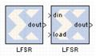

|
|
This block is listed in the following Xilinx Blockset libraries: Basic Elements, DSP, Memory, and Index.The Xilinx LFSR block implements a Linear Feedback Shift Register (LFSR). This block supports both the Galois and Fibonacci structures using either the XOR or XNOR gate and allows a re-loadable input to change the current value of the register at any time. The LFSR output and re-loadable input can be configured as either serial or parallel ports